Rise of Wide Multiple Baseline Stereo
The wide multiple baseline stereo (WxBS) is a process of establishing a sufficient number of pixel or region correspondences from two or more images depicting the same scene to estimate the geometric relationship between cameras, which produced these images. Typically, WxBS relies on the scene rigidity – the assumption that there is no motion in the scene except the motion of the camera itself. The stereo problem is called wide multiple baseline if the images are significantly different in more than one aspect: viewpoint, illumination, time of acquisition, and so on. Historically, people were focused on the simpler problem with a single baseline, which was geometrical, i.e., viewpoint difference between cameras, and the area was known as wide baseline stereo. Nowadays, the field is mature and research is focused on solving more challenging multi-baseline problems.
WxBS is a building block of many popular computer vision applications, where spatial localization or 3D world understanding is required – panorama stitching, 3D reconstruction, image retrieval, SLAM, etc.
If the wide baseline stereo is a new concept for you, I recommend checking the examplanation in simple terms.
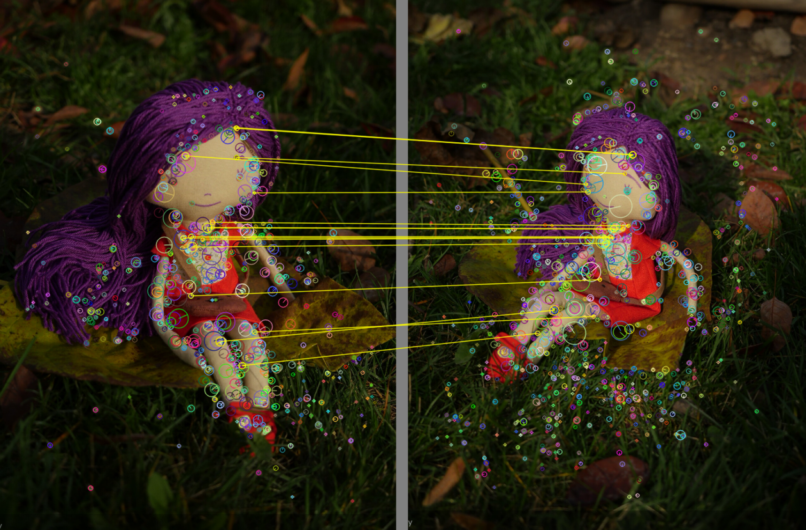
Where does wide baseline stereo come from?
As often happens, a new problem arises from the old – narrow or short baseline stereo. In the narrow baseline stereo, images are taken from nearby positions, often exactly at the same time. One could find correspondence for the point \((x,y)\) from the image \(I_1\) in the image \(I_2\) by simply searching in some small window around \((x,y)\) or, assuming that camera pair is calibrated and the images are rectified – by searching along the epipolar line.
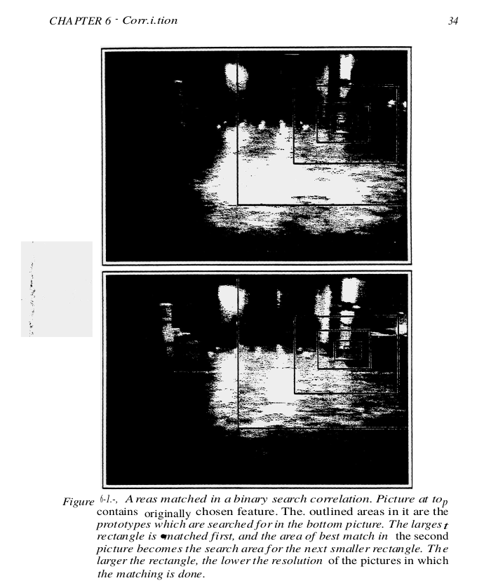
One of the first, if not the first, approaches to the wide baseline stereo problem was proposed by Schmid and Mohr in 1995. Given the difficulty of the wide multiple baseline stereo task at the moment, only a single — geometrical – baseline was considered, thus the name – wide baseline stereo (WBS). The idea of Schmid and Mohr was to equip each keypoint with an invariant descriptor. This allowed establishing tentative correspondences between keypoints under viewpoint and illumination changes, as well as occlusions. One of the stepping stones was the corner detector by Harris and Stevens , initially used for the application of tracking. It is worth a mention, that there were other good choices for the local feature detector at the time, starting with the Forstner , Moravec and Beaudet feature detectors .
The Schmid and Mohr approach was later extended by Beardsley, Torr and Zisserman by adding RANSAC robust geometry estimation and later refined by Pritchett and Zisserman in 1998. The general pipeline remains mostly the same until now , which is shown in Figure below.
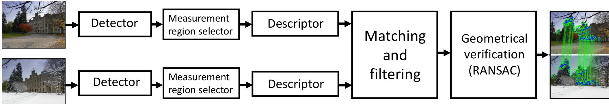
Let’s write down the WxBS algorithm:
- Compute interest points/regions in all images independently
- For each interest point/region compute a descriptor of their neigborhood (local patch).
- Establish tentative correspondences between interest points based on their descriptors.
- Robustly estimate geometric relation between two images based on tentative correspondences with RANSAC.
The reasoning behind each step is described in this separate post.
Quick expansion
This algorithm significantly changed computer vision landscape for next forteen years.
Soon after the introduction of the WBS algorithm, it became clear that its quality significantly depends on the quality of each component, i.e., local feature detector, descriptor, and geometry estimation. Local feature detectors were designed to be as invariant as possible, backed up by the scale-space theory, most notable developed by Lindenberg . A plethora of new detectors and descriptors were proposed in that time. We refer the interested reader to these two surveys: by Tuytelaars and Mikolajczyk (2008) and by Csurka (2018). Among the proposed local features is one of the most cited computer vision papers ever – SIFT local feature . Besides the SIFT descriptor itself,
Lowe’s paper incorporated several important steps, proposed earlier with his co-authors, to the matching pipeline. Specifically, they are quadratic fitting of the feature responses for precise keypoint localization , using the Best-Bin-First kd-tree as an approximate nearest neightbor search engine to speed-up the tentative correspondences generation, and using second-nearest neighbor (SNN) ratio to filter the tentative matches. It is worth noting that SIFT feature became popular only after Mikolajczyk benchmark paper that showed its superiority to the rest of alternatives.
Robust geometry estimation was also a hot topic: a lot of improvements over vanilla RANSAC were proposed. For example, LO-RANSAC proposed an additional local optimization step into RANSAC to significantly decrease the number of required steps. PROSAC takes into account the tentative correspondences matching score during sampling to speed up the procedure. DEGENSAC improved the quality of the geometry estimation in the presence of a dominant plane in the images, which is the typical case for urban images. We refer the interested reader to the survey by Choi .
Success of wide baseline stereo with SIFT features led to aplication of its components to other computer vision tasks, which were reformulated through wide baseline stereo lens:
- Scalable image search. Sivic and Zisserman in famous “Video Google” paper proposed to treat local features as “visual words” and use ideas from text processing for searching in image collections. Later even more WBS elements were re-introduced to image search, most notable – spatial verification: simplified RANSAC procedure to verify if visual word matches were spatially consistent.
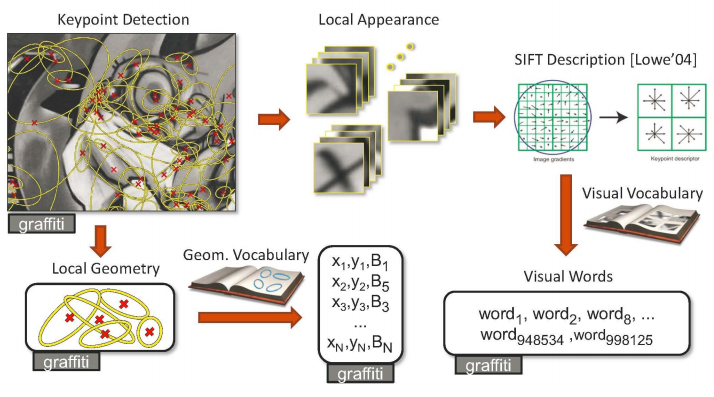
- Image classification was performed by placing some classifier (SVM, random forest, etc) on top of some encoding of the SIFT-like descriptors, extracted sparsely or densely.
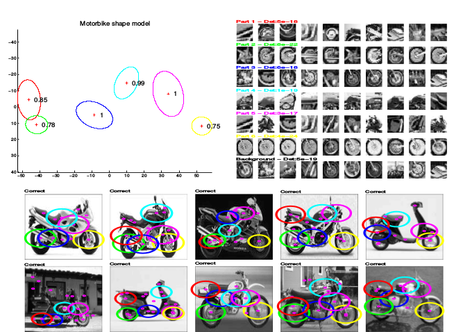
- Object detection was formulated as relaxed wide baseline stereo problem or as classification of SIFT-like features inside a sliding window
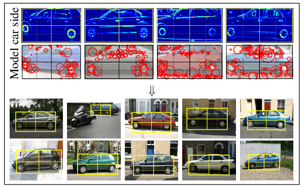
- Semantic segmentation was performed by classicication of local region descriptors, typically, SIFT and color features and postprocessing afterwards.
Of course,wide baseline stereo was also used for its direct applications:
- 3D reconstruction was based on camera poses and 3D points, estimated with help of SIFT features
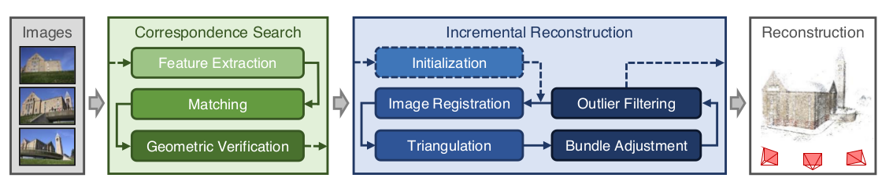
SLAM(Simultaneous localization and mapping) were based on fast version of local feature detectors and descriptors.
Panorama stiching and, more generally, feature-based image registration were initalized with a geometry obtained by WBS and then further optimized
Deep Learning Invasion: retreal to the geometrical fortress
In 2012 the deep learning-based AlexNet approach beat all methods in image classification at the ImageNet Large Scale Visual Recognition Challenge (ILSVRC). Soon after, Razavian et al. have shown that convolutional neural networks (CNNs) pre-trained on the Imagenet outperform more complex traditional solutions in image and scene classification, object detection and image search, see Figure below. The performance gap between deep leaning and “classical” solutions was large and quickly increasing. In addition, deep learning pipelines, be it off-the-shelf pretrained, fine-tuned or the end-to-end learned networks, are simple from the engineering perspective. That is why the deep learning algorithms quickly become the default option for lots of computer vision problems.
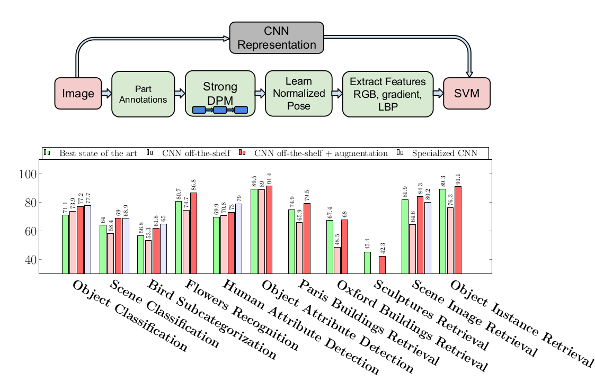
However, there was still a domain, where deep learned solutions failed, sometimes spectacularly: geometry-related tasks. Wide baseline stereo , visual localization and SLAM are still areas, where the classical wide baseline stereo dominates .
The full reasons why convolution neural network pipelines are struggling to perform tasks that are related to geometry, and how to fix that, are yet to be understood. The observations from the recent papers are following:
- CNN-based pose predictions predictions are roughly equivalent to the retrieval of the most similar image from the training set and outputing its pose . This kind of behaviour is also observed in a related area: single-view 3D reconstruction performed by deep networks is essentially a retrieval of the most similar 3D model from the training set .
- Geometric and arithmetic operations are hard to represent via vanilla neural networks (i.e., matrix multiplication followed by non-linearity) and they may require specialized building blocks, approximating operations of algorithmic or geometric methods, e.g. spatial transformers and arithmetic units . Even with such special-purpose components, the deep learning solutions require “careful initialization, restricting parameter space, and regularizing for sparsity” .
- Vanilla CNNs suffer from sensitivity to geometric transformations like scaling and rotation or even translation . The sensitivity to translations might sound counter-intuitive, because the concolution operation by definition is translation-covariant. However, a typical CNN contains also zero-padding and downscaling operations, which break the covariance . Unlike them, classical local feature detectors are grounded on scale-space and image processing theories. Some of the classical methods deal with the issue by explicit geometric normalization of the patches before description.
- CNNs predictions can be altered by a change in a small localized area or even a single pixel , while the wide baseline stereo methods require the consensus of different independent regions.
Today: assimilation and merging
Wide baseline stereo as a task: formulate differentiably and learn modules
This leads us to the following question – is deep learning helping WxBS today? The answer is yes. After the quick interest in the black-box-style models, the current trend is to design deep learning solutions for the wide baseline stereo in a modular fashion , resembling the one in Figure below. Such modules are learned separately. For example, the HardNet descriptor replaces SIFT local descriptor. The Hessian detector can be replaced by deep learned detectors like KeyNet or the joint detector-descriptor . The matching and filtering are performed by the SuperGlue matching network, etc. There have been attempts to formulate the full pipeline solving problem like SLAM in a differentiable way, combining the advantages of structured and learning-based approaches.
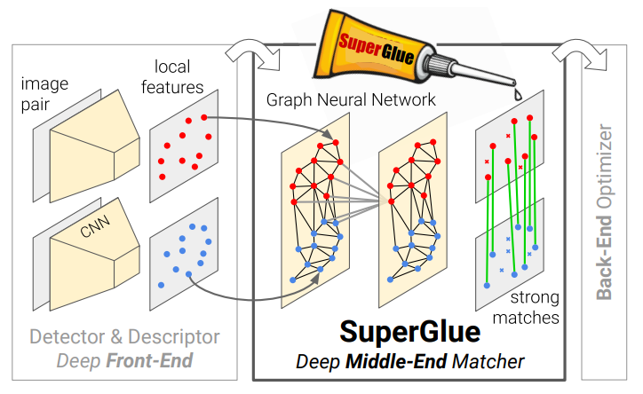
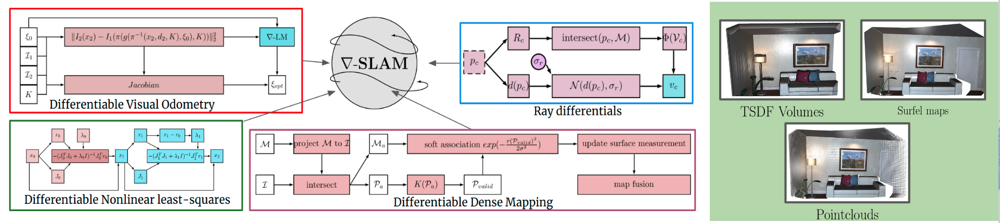
Wide baseline stereo as a idea: consensus of local independent predictions
On the other hand, as an algorithm, wide baseline stereo is summarized into two main ideas
- Image should be represented as set of local parts, robust to occlusion, and not influencing each other.
- Decision should be based on spatial consensus of local feature correspondences.
One of modern revisit of wide baseline stereo ideas is Capsule Networks. Unlike vanilla CNNs, capsule networks encode not only the intensity of feature response, but also its location. Geometric agreement between “object parts” is a requirement for outputing a confident prediction.
Similar ideas are now explored for ensuring adversarial robustness of CNNs.
Another way of using “consensus of local independent predictions” is used in Cross-transformers paper: spatial attention helps to select relevant feature for few-shot learning, see Figure below.
While wide multiple baseline stereo is a mature field now and does not attract even nearly as much attention as before, it continues to play an important role in computer vision.
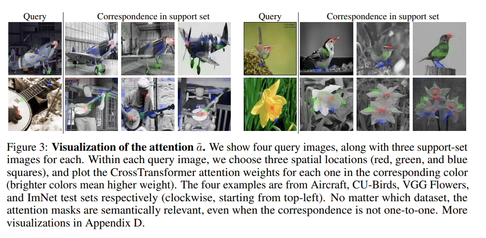
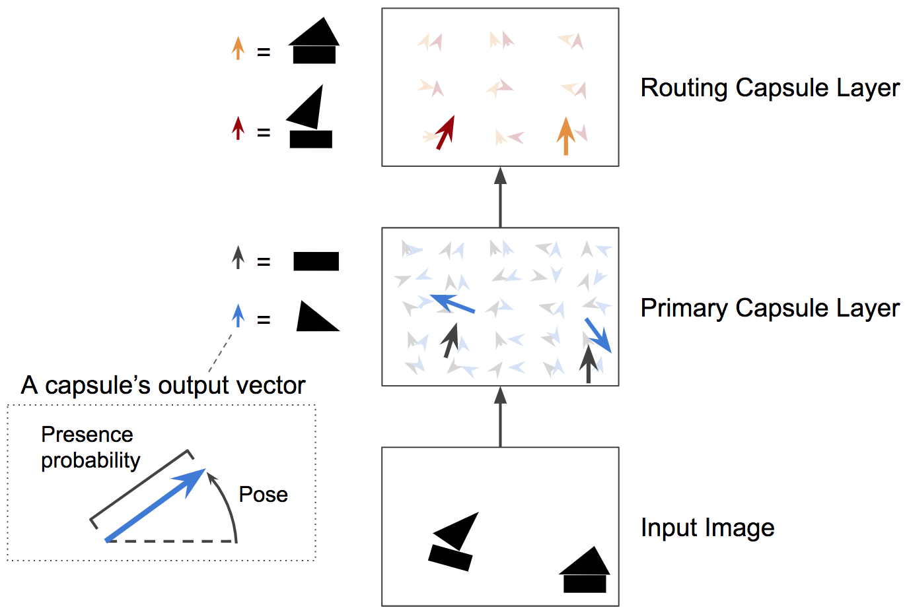
References
[Hannah1974ComputerMO] M. J., ``Computer matching of areas in stereo images.’’, 1974.
[Moravec1980] Hans Peter Moravec, ``Obstacle Avoidance and Navigation in the Real World by a Seeing Robot Rover’’, 1980.
[Hartley2004] R.~I. Hartley and A. Zisserman, ``Multiple View Geometry in Computer Vision’’, 2004.
[Schmid1995] Schmid Cordelia and Mohr Roger, ``Matching by local invariants’’, , vol. , number , pp. , 1995. online
[Harris88] C. Harris and M. Stephens, ``A Combined Corner and Edge Detector’’, Fourth Alvey Vision Conference, 1988.
[forstner1987fast] W. F{"o}rstner and E. G{"u}lch, ``A fast operator for detection and precise location of distinct points, corners and centres of circular features’’, Proc. ISPRS intercommission conference on fast processing of photogrammetric data, 1987.
[Hessian78] P.R. Beaudet, ``Rotationally invariant image operators’’, Proceedings of the 4th International Joint Conference on Pattern Recognition, 1978.
[Beardsley96] P. Beardsley, P. Torr and A. Zisserman, ``3D model acquisition from extended image sequences’’, ECCV, 1996.
[RANSAC1981] Fischler Martin A. and Bolles Robert C., ``Random sample consensus: a paradigm for model fitting with applications to image analysis and automated cartography’’, Commun. ACM, vol. 24, number 6, pp. 381–395, jun 1981.
[Pritchett1998] P. Pritchett and A. Zisserman, ``Wide baseline stereo matching’’, ICCV, 1998.
[Pritchett1998b] P. Pritchett and A. Zisserman, ``“Matching and Reconstruction from Widely Separated Views”’’, 3D Structure from Multiple Images of Large-Scale Environments, 1998.
[WBSTorr99] P. Torr and A. Zisserman, ``Feature Based Methods for Structure and Motion Estimation’’, Workshop on Vision Algorithms, 1999.
[CsurkaReview2018] {Csurka} Gabriela, {Dance} Christopher R. and {Humenberger} Martin, ``From handcrafted to deep local features’’, arXiv e-prints, vol. , number , pp. , 2018.
[IMW2020] Jin Yuhe, Mishkin Dmytro, Mishchuk Anastasiia et al., ``Image Matching across Wide Baselines: From Paper to Practice’’, arXiv preprint arXiv:2003.01587, vol. , number , pp. , 2020.
[Lindeberg1993] Lindeberg Tony, ``Detecting Salient Blob-like Image Structures and Their Scales with a Scale-space Primal Sketch: A Method for Focus-of-attention’’, Int. J. Comput. Vision, vol. 11, number 3, pp. 283–318, December 1993.
[Lindeberg1998] Lindeberg Tony, ``Feature Detection with Automatic Scale Selection’’, Int. J. Comput. Vision, vol. 30, number 2, pp. 79–116, November 1998.
[lindeberg2013scale] Lindeberg Tony, ``Scale-space theory in computer vision’’, , vol. 256, number , pp. , 2013.
[Tuytelaars2008] Tuytelaars Tinne and Mikolajczyk Krystian, ``Local Invariant Feature Detectors: A Survey’’, Found. Trends. Comput. Graph. Vis., vol. 3, number 3, pp. 177–280, July 2008.
[Lowe99] D. Lowe, ``Object Recognition from Local Scale-Invariant Features’’, ICCV, 1999.
[SIFT2004] Lowe David G., ``Distinctive Image Features from Scale-Invariant Keypoints’’, International Journal of Computer Vision (IJCV), vol. 60, number 2, pp. 91–110, 2004.
[QuadInterp2002] M. Brown and D. Lowe, ``Invariant Features from Interest Point Groups’’, BMVC, 2002.
[aknn1997] J.S. Beis and D.G. Lowe, ``Shape Indexing Using Approximate Nearest-Neighbour Search in High-Dimensional Spaces’’, CVPR, 1997.
[MikoDescEval2003] K. Mikolajczyk and C. Schmid, ``A Performance Evaluation of Local Descriptors’’, CVPR, June 2003.
[Mikolajczyk05] Mikolajczyk K., Tuytelaars T., Schmid C. et al., ``A Comparison of Affine Region Detectors’’, IJCV, vol. 65, number 1/2, pp. 43–72, 2005.
[LOransac2003] O. Chum, J. Matas and J. Kittler, ``Locally Optimized RANSAC’’, Pattern Recognition, 2003.
[PROSAC2005] O. Chum and J. Matas, ``Matching with PROSAC – Progressive Sample Consensus’’, Proceedings of the 2005 IEEE Computer Society Conference on Computer Vision and Pattern Recognition (CVPR’05) - Volume 1 - Volume 01, 2005.
[Degensac2005] O. Chum, T. Werner and J. Matas, ``Two-View Geometry Estimation Unaffected by a Dominant Plane’’, CVPR, 2005.
[RANSACSurvey2009] S. Choi, T. Kim and W. Yu, ``Performance Evaluation of RANSAC Family.’’, BMVC, 2009.
[VideoGoogle2003] J. Sivic and A. Zisserman, ``Video Google: A Text Retrieval Approach to Object Matching in Videos’’, ICCV, 2003.
[Philbin07] J. Philbin, O. Chum, M. Isard et al., ``Object Retrieval with Large Vocabularies and Fast Spatial Matching’’, CVPR, 2007.
[Fergus03] R. Fergus, P. Perona and A. Zisserman, ``Object Class Recognition by Unsupervised Scale-Invariant Learning’’, CVPR, 2003.
[CsurkaBoK2004] C.D. G. Csurka, J. Willamowski, L. Fan et al., ``Visual Categorization with Bags of Keypoints’’, ECCV, 2004.
[Lazebnik06] S. Lazebnik, C. Schmid and J. Ponce, ``Beyond Bags of Features: Spatial Pyramid Matching for Recognizing Natural Scene Categories’’, CVPR, 2006.
[Chum2007Exemplar] O. {Chum} and A. {Zisserman}, ``An Exemplar Model for Learning Object Classes’’, CVPR, 2007.
[HoG2005] N. {Dalal} and B. {Triggs}, ``Histograms of oriented gradients for human detection’’, CVPR, 2005.
[Superparsing2010] J. Tighe and S. Lazebnik, ``SuperParsing: Scalable Nonparametric Image Parsing with Superpixels’’, ECCV, 2010.
[PhotoTourism2006] Snavely Noah, Seitz Steven M. and Szeliski Richard, ``Photo Tourism: Exploring Photo Collections in 3D’’, ToG, vol. 25, number 3, pp. 835–846, 2006.
[RomeInDay2009] Agarwal Sameer, Furukawa Yasutaka, Snavely Noah et al., ``Building Rome in a day’’, Communications of the ACM, vol. 54, number , pp. 105–112, 2011.
[COLMAP2016] J. Sch"{o}nberger and J. Frahm, ``Structure-From-Motion Revisited’’, CVPR, 2016.
[Se02] Se S., G. D. and Little J., ``Mobile Robot Localization and Mapping with Uncertainty Using Scale-Invariant Visual Landmarks’’, IJRR, vol. 22, number 8, pp. 735–758, 2002.
[PTAM2007] G. {Klein} and D. {Murray}, ``Parallel Tracking and Mapping for Small AR Workspaces’’, IEEE and ACM International Symposium on Mixed and Augmented Reality, 2007.
[Mur15] Mur-Artal R., Montiel J. and Tard{'o}s J., ``ORB-Slam: A Versatile and Accurate Monocular Slam System’’, IEEE Transactions on Robotics, vol. 31, number 5, pp. 1147–1163, 2015.
[Brown07] Brown M. and Lowe D., ``Automatic Panoramic Image Stitching Using Invariant Features’’, IJCV, vol. 74, number , pp. 59–73, 2007.
[DualBootstrap2003] V. C., Tsai} {Chia-Ling and {Roysam} B., ``The dual-bootstrap iterative closest point algorithm with application to retinal image registration’’, IEEE Transactions on Medical Imaging, vol. 22, number 11, pp. 1379-1394, 2003.
[AlexNet2012] Alex Krizhevsky, Ilya Sutskever and Geoffrey E., ``ImageNet Classification with Deep Convolutional Neural Networks’’, 2012.
[Astounding2014] A. S., H. {Azizpour}, J. {Sullivan} et al., ``CNN Features Off-the-Shelf: An Astounding Baseline for Recognition’’, CVPRW, 2014.
[Melekhov2017relativePoseCnn] I. Melekhov, J. Ylioinas, J. Kannala et al., ``Relative Camera Pose Estimation Using Convolutional Neural Networks’’, , 2017. online
[PoseNet2015] A. Kendall, M. Grimes and R. Cipolla, ``PoseNet: A Convolutional Network for Real-Time 6-DOF Camera Relocalization’’, ICCV, 2015.
[sattler2019understanding] T. Sattler, Q. Zhou, M. Pollefeys et al., ``Understanding the limitations of cnn-based absolute camera pose regression’’, CVPR, 2019.
[zhou2019learn] Q. Zhou, T. Sattler, M. Pollefeys et al., ``To Learn or Not to Learn: Visual Localization from Essential Matrices’’, ICRA, 2020.
[pion2020benchmarking] !! This reference was not found in biblio.bib !!
[Tatarchenko2019] M. Tatarchenko, S.R. Richter, R. Ranftl et al., ``What Do Single-View 3D Reconstruction Networks Learn?’’, CVPR, 2019.
[STN2015] M. Jaderberg, K. Simonyan and A. Zisserman, ``Spatial transformer networks’’, NeurIPS, 2015.
[NALU2018] A. Trask, F. Hill, S.E. Reed et al., ``Neural arithmetic logic units’’, NeurIPS, 2018.
[NAU2020] A. Madsen and A. Rosenberg, ``Neural Arithmetic Units’’, ICLR, 2020.
[GroupEqCNN2016] T. Cohen and M. Welling, ``Group equivariant convolutional networks’’, ICML, 2016.
[MakeCNNShiftInvariant2019] R. Zhang, ``Making convolutional networks shift-invariant again’’, ICML, 2019.
[AbsPositionCNN2020] M. Amirul, S. Jia and N. D., ``How Much Position Information Do Convolutional Neural Networks Encode?’’, ICLR, 2020.
[AdvPatch2017] T. Brown, D. Mane, A. Roy et al., ``Adversarial patch’’, NeurIPSW, 2017.
[OnePixelAttack2019] Su Jiawei, Vargas Danilo Vasconcellos and Sakurai Kouichi, ``One pixel attack for fooling deep neural networks’’, IEEE Transactions on Evolutionary Computation, vol. 23, number 5, pp. 828–841, 2019.
[cv4action2019] Zhou Brady, Kr{"a}henb{"u}hl Philipp and Koltun Vladlen, ``Does computer vision matter for action?’’, Science Robotics, vol. 4, number 30, pp. , 2019.
[HardNet2017] A. Mishchuk, D. Mishkin, F. Radenovic et al., ``Working Hard to Know Your Neighbor’s Margins: Local Descriptor Learning Loss’’, NeurIPS, 2017.
[KeyNet2019] A. Barroso-Laguna, E. Riba, D. Ponsa et al., ``Key.Net: Keypoint Detection by Handcrafted and Learned CNN Filters’’, ICCV, 2019.
[SuperPoint2017] Detone D., Malisiewicz T. and Rabinovich A., ``Superpoint: Self-Supervised Interest Point Detection and Description’’, CVPRW Deep Learning for Visual SLAM, vol. , number , pp. , 2018.
[R2D22019] J. Revaud, ``R2D2: Repeatable and Reliable Detector and Descriptor’’, NeurIPS, 2019.
[D2Net2019] M. Dusmanu, I. Rocco, T. Pajdla et al., ``D2-Net: A Trainable CNN for Joint Detection and Description of Local Features’’, CVPR, 2019.
[sarlin2019superglue] P. Sarlin, D. DeTone, T. Malisiewicz et al., ``SuperGlue: Learning Feature Matching with Graph Neural Networks’’, CVPR, 2020.
[gradslam2020] J. Krishna Murthy, G. Iyer and L. Paull, ``gradSLAM: Dense SLAM meets Automatic Differentiation ’’, ICRA, 2020 .
[CapsNet2011] G.E. Hinton, A. Krizhevsky and S.D. Wang, ``Transforming auto-encoders’’, ICANN, 2011.
[CapsNet2017] S. Sabour, N. Frosst and G.E. Hinton, ``Dynamic routing between capsules’’, NeurIPS, 2017.
[li2020extreme] Li Jianguo, Sun Mingjie and Zhang Changshui, ``Extreme Values are Accurate and Robust in Deep Networks’’, , vol. , number , pp. , 2020. online
Everything you (didn’t) want to know about image matching